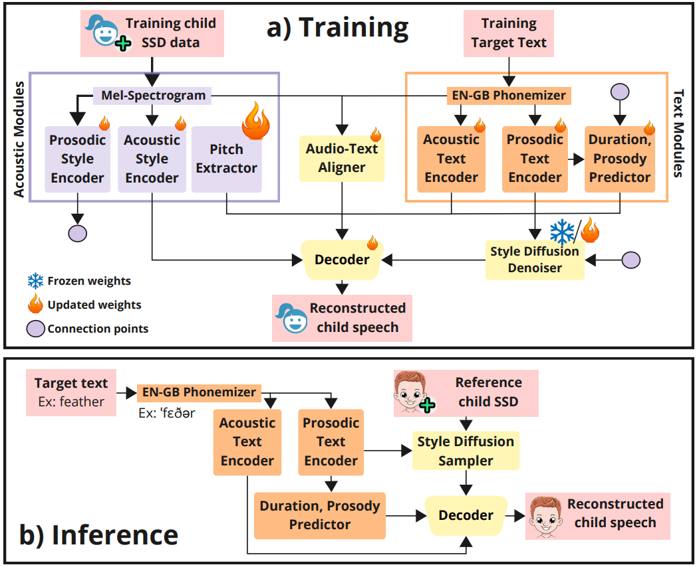

This paper presents ChiReSSD, a speech reconstruction framework for children with speech sound disorders (SSDs). ChiReSSD uses a target transcript, along with a short reference recording from a child with SSD, to synthesize a corrected version of the target utterance. The system improves intelligibility by suppressing mispronunciations while preserving the child’s speaker identity, speaking style, and prosodic characteristics. Standard style-preserving text-to-speech (TTS) reinforces existing mispronunciations rather than correcting them, since pathological articulation is encoded as part of the speaker style. ChiReSSD addresses this limitation by routing pronunciation through the text pathway, while speaker identity and prosody are controlled by a style pathway, without requiring paired typical–atypical data or a dedicated model per child. We evaluate ChiReSSD on the STAR dataset, achieving a 48% relative reduction in character error rate and a 19% gain in speaker similarity over style-preserving baselines. Consonant-level annotations from a certified speech-language therapist on 21 paired samples yield a Pearson correlation of ρ = 0.63 with the automatic estimates, indicating feasibility for assisting clinical metric computation and motivating larger-scale annotation studies. While specifically designed for children’s speech, the results in the TORGO dataset further indicate that ChiReSSD can generalize to adult dysarthric speech across severity levels.

Original SSD samples were obtained from: J. Lawson and J. Cleland, “STAR: Speech Therapy Animation and Imaging Resource,” Proceedings of the International Clinical Phonetics and Linguistics Association, 2023.